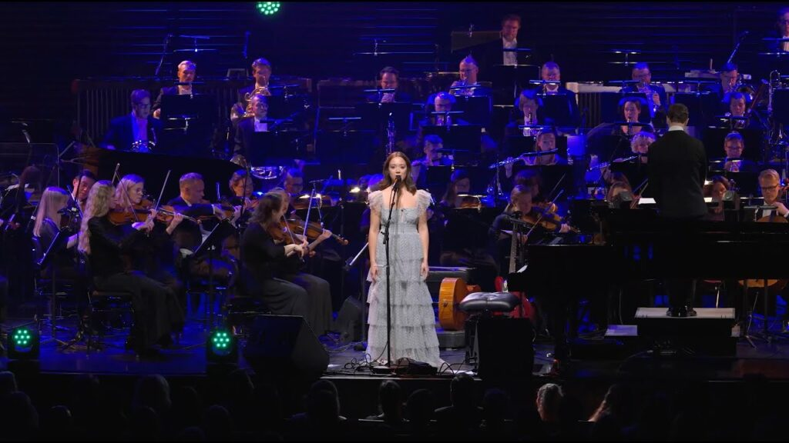
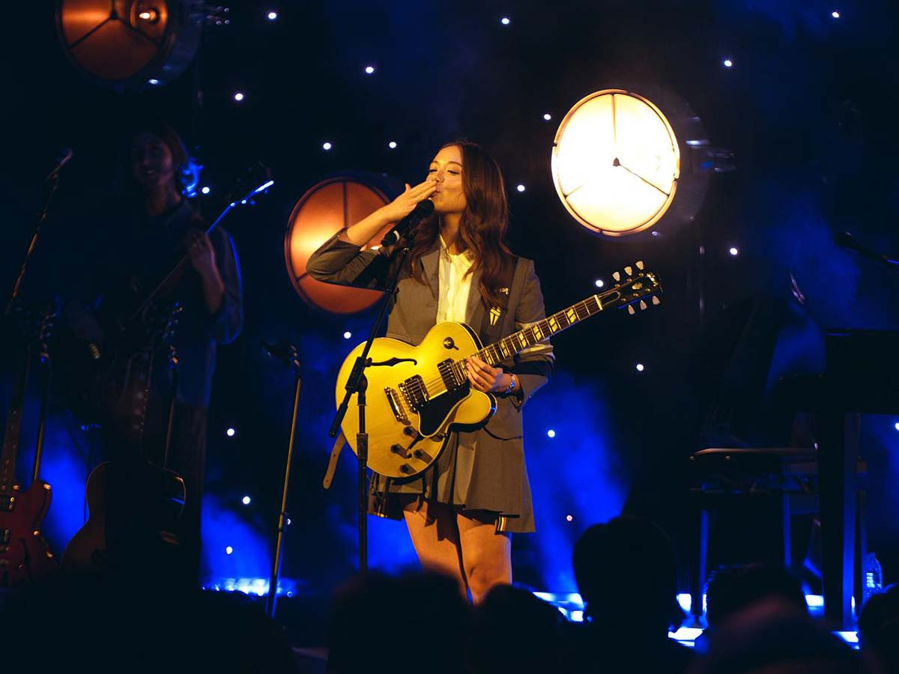

Laufey (born Apr 23, 1999), is an Icelandic singer-songwriter and record producer. She achieved prominence in the early 2020s for her success as a jazz-inspired pop artists, with critics noting that her jazz-inflected songs have received considerable success for a genre that has declined commercially.
As of 2024, she's a Grammy winner, having won the award of best traditional pop vocal album. Almost three years after she recorded her first single, Laufey (pronounced Lay-vay) released a debut EP and a full-length album, earning 700,000 followers and over 18 million likes on TikTok. She's performed with the Iceland Symphony Orchestra, the LA Philarmonic Orchestra, and will perform with the Manila Philarmonic Orhcestra this May.


Blending jazz and classical influences into pop to tell retro, soft-focus fantasies full of “wine-stained lips”, handsome strangers and heartbreak, even Laufey’s most cynical songs are cinematic romances. On Dreamer, the 24-year-old claims to quit dating for good – “I’m throwing in my hat / I can’t take another lifeless little chat!” – yet the airy arrangement adds a theatrical wink, as if it’s the scene before the Hollywood heroine is finally swept off her feet.
Since her 2021 debut, the classically trained Icelandic Chinese musician has been somewhat patronisingly praised for “introducing” jazz to gen Z. This downplays Laufey’s talent for pop storytelling and underestimates her fans; tonight’s sold-out crowd reverently sing along with her unusual, honeyed contralto and scream for cello solos with the vigour usually reserved for a pop show’s confetti cannons.
With lounge-singer poise, Laufey floats through bossa nova single From the Start, performs the syrupy Best Friend as a skit with her violinist twin sister and chases early song Like the Movies with a hint of jazz standard Misty. Her self-proclaimed “old-fashioned” ways can soften her songs to a fault, but a heavier rendition of Lovesick punctures the lull, bringing fresh energy and possibly a sign of future experimentation. (Katie Hawthorne, The Guardian)
💿Discography💿
🎷Everything I Know About Love (2022)
Fragile • Beautiful Stranger • Valentine • Above the Chinese Restaurant • Dear Soulmate • What Love Will Do to You • I've Never Been In Love Before • Just Like Chet • Everything I Know About Love • Falling Behind • Hi • Dance with You Tonight • Night Light
🎷Bewitched (2023)
Dreamer • Second Best • Haunted • Must Be Love • While You Were Sleeping • Lovesick • California and Me (ft. Philarmonia Orchestra) • Nocturne (Interlude) • Promise • From The Start • Misty • Serendipity • Letter to My 13 Year Old Self • Bewitched
Laufey's Music
On NPR Music's "Tiny Desk Concert" series, Laufey plays some of her "Bewitched" songs.
Laufey performs "Valentine", live from the Filinvest Tent in Manila.